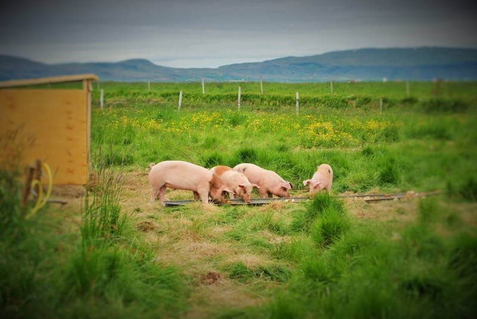
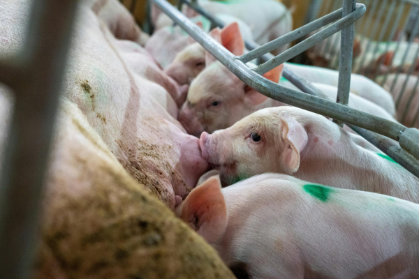
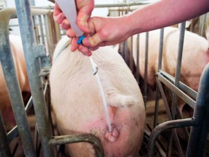
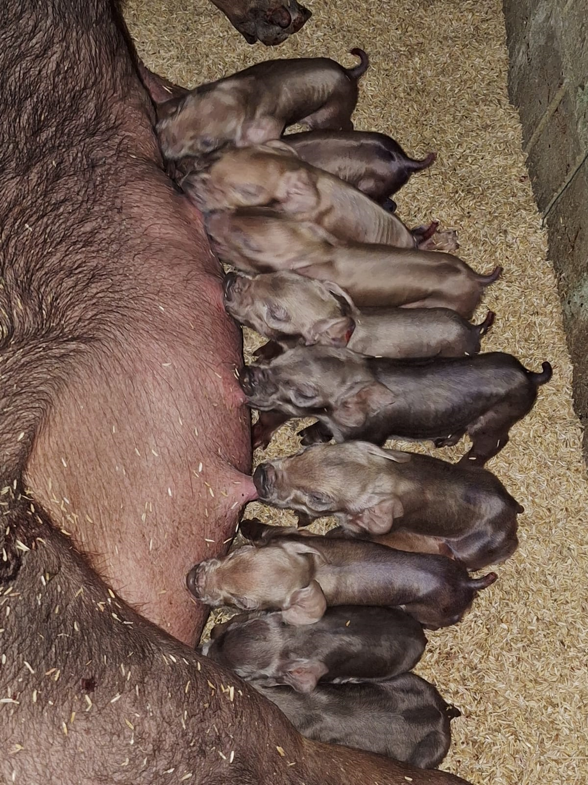
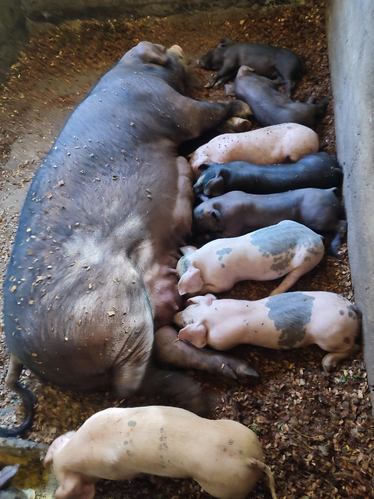
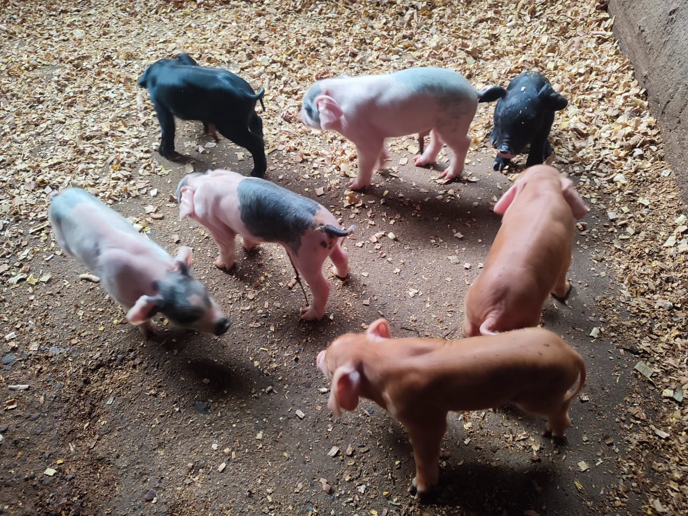
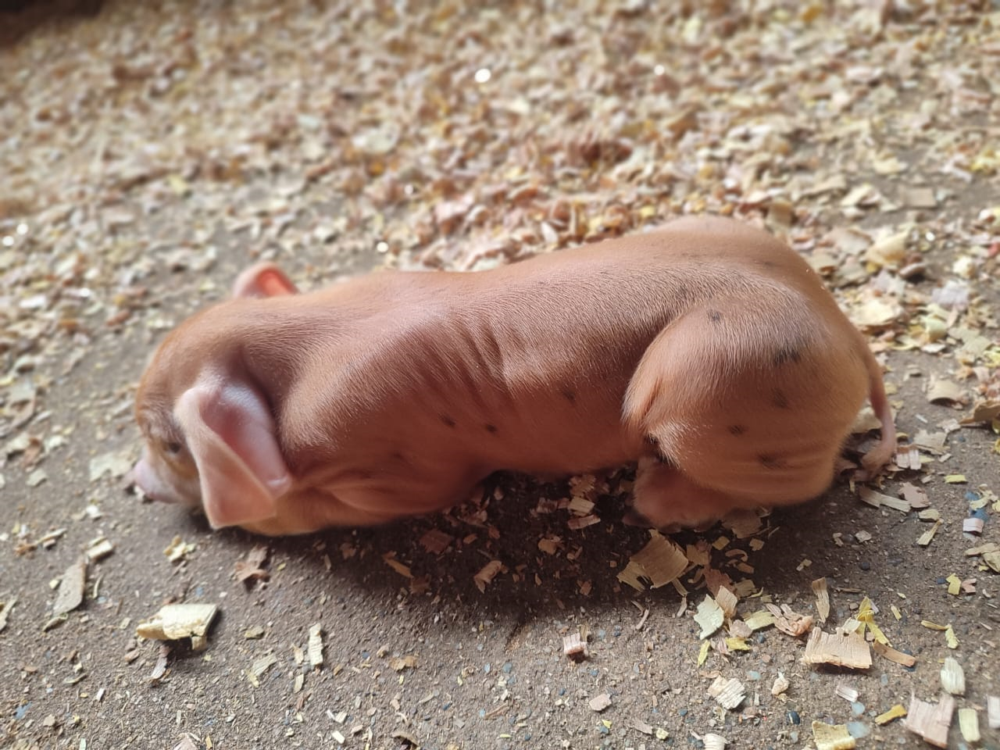

Bienvenidos a Granja Vi. Ve.
Somos una granja dedicada a la porcicultura sostenible, brindando servicios de calidad en la cría, venta y asesoramiento técnico sobre el manejo reproductivo de cerdos.
Nosotros
En Granja Vi. Ve. trabajamos con pasión y compromiso para ofrecer productos porcinos saludables y servicios confiables. Nuestra misión es contribuir al desarrollo de la porcicultura moderna, promoviendo el bienestar animal y la producción eficiente.
- Misión: Criar cerdos saludables con prácticas sostenibles.
- Visión: Ser una granja modelo en la región en producción y asesoría técnica.
- Valores: Responsabilidad, compromiso y calidad.
Servicios
Ofrecemos una variedad de servicios especializados para porcicultores y clientes particulares:
- Venta de lechones y cerdos de engorde.
- Asesoramiento técnico en manejo y nutrición.
- Servicio de inseminación artificial porcina.
- Capacitaciones y visitas guiadas a la granja.
Galería
Algunas imágenes de nuestro trabajo diario:






Todas nuestras prácticas se realizan bajo estándares de bienestar animal, calidad genética y sostenibilidad.
Contacto
📍 Pichanaqui, Chanchamayo, Junín – Perú📞 Teléfono: +51 971 238 123
📧 Email: affari@vive.com
🌐 Página web: granjavive.com